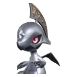

Home首页 / Database数据库 / Helmwhelp盔面龙

No. 065
Helmwhelp盔面龙
Helmwhelp has 2 forms. The base stats, the trait and the skill list are the same on all of them — what changes is the type, where it lives, and what it takes to evolve.盔面龙 共有 2 个形态。基础数值、特性和技能在所有形态上完全一致 —— 变的是属性、栖息地，以及进化要付的代价。
Overview简介
Helmwhelp is a second stage with no first stage: the official tree gives it a stage-2 label and renders nothing below it, which is a quirk of how the wiki builds its trees rather than a claim about the game. It carries the family's shared three cards — a wind tackle, an overcharged claw and the basic attack — and it forks into a wind ending and a fire one.盔面龙是一个没有第一阶的第二阶：官方树给它打了二阶的标签，下面却什么也不渲染 —— 这是维基构建进化树的方式留下的怪处，不是关于游戏的结论。它带着这一家子共用的三张卡 —— 风系冲撞、超载利爪和基础攻击 —— 然后分叉成一个风系终点和一个火系终点。
One scale on all six axes, 0–140 — the same one on every species page.六个轴共用一套刻度 0–140，本站每一页的物种都是这套。
- HP生命
- 94
- ATK攻击
- 78
- P.DEF物防
- 88
- M.DEF魔防
- 61
- BREAK击破
- 92
- REGEN回能
- 76
At a glance一眼速览
Mobility探索技能
Bilateral双侧视野
A second view of the same place, described as a different perspective rather than a wider one. Its use is not stated, so treat it as a way of looking at things rather than a way of finding them — Detection is the skill that finds things.看同一个地方的另一种视角 —— 官方说的是「不一样的景色」，不是「更大的范围」。用途没写，所以它更像换一种看法，而不是找东西的办法；找东西的是探查。
Trait特性
Counter Strike反击大师
Being hit raises its BREAK efficiency by 25% for 10 seconds. It needs to be hit to switch on, which puts it directly at odds with staying out of range — this is a trait that wants you in the middle of the fight, not at the edge of it.受到攻击后，击破效率 +25%，持续 10 秒。它得挨打才生效，这跟「站远一点」是直接矛盾的 —— 这个特性要的是你在人堆里，不是在边上。
Skills技能
Split the way the official page splits them: Combat holds the skills you cast, Innate the basic attack. The list is the species', not the form's — a form does not change it.分法和官方页面一致：战斗技能是你会主动放的那几个，固有技能里是基础攻击。这份表属于物种，不属于形态 —— 换形态不会换掉它。
Combat战斗技能
-
Wind Tackle疾风冲撞
Wind风Tackles and knocks back small-sized targets, then gives itself +15% damage reduction for 10 seconds. Note the size qualifier sitting on the knockback: against anything large this is a plain tackle, and the damage reduction is the half that applies every time regardless.冲撞并击退小体型目标，随后自身获得 +15% 伤害减免，持续 10 秒。注意击退前面那个体型限定：面对大体型目标时它就是一次普通冲撞，而每次都生效的是减伤那一半。
-
Overcharged Claw Strike盈能爪击
Wind风A claw strike at a single target. No element, no Power figure, no rider — the honest reading is that it is a plain attack, the shortest kind of entry in the index, and one to characterise in game rather than from the sheet.挥爪攻击一个目标。没有元素、没有威力值、没有附加效果 —— 诚实的读法是它就是一次普通攻击：图鉴里最短的一种条目，该在游戏里认识它，不是在技能表上。
Innate固有技能
-
ATK攻击
Wind风The basic attack: wind, close range, carrying a BREAK tag at the front of its official text. As with every tagged ATK card, the payload gives that tag no field of its own — it is part of the description — so the takeaway is simply that this melee wind basic attack is flagged, where the plain melee wind card is not.基础攻击：风元素、近距离，官方正文开头还挂着 BREAK 标记。和所有带标记的普攻一样，数据里没有给这个标记单独的字段 —— 它就是正文的一部分 —— 所以能得到的只是：这个近战风系普攻被标记了，而素版那张没有。
Forms形态
-
065A base form基础形态
Helmwhelp盔面龙
Wind风- Where地点
- Russet Highlands丹岩高地
- Evolves into进化为
- —
-
065B
Mountain HelmwhelpMountain 盔面龙
Wind风- Where地点
- Russet Highlands丹岩高地
- Evolves into进化为
- —
Evolution line进化线
Helmwhelp
The level and the materials are not shared between forms. Each form's own page carries its own requirement.等级和材料在形态之间并不通用。每个形态的进化条件见它自己的页面。